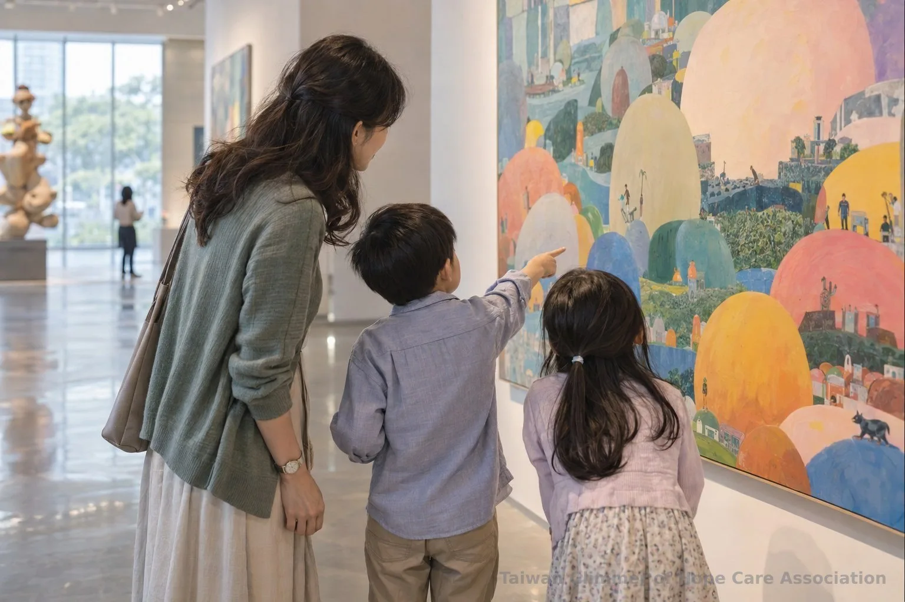
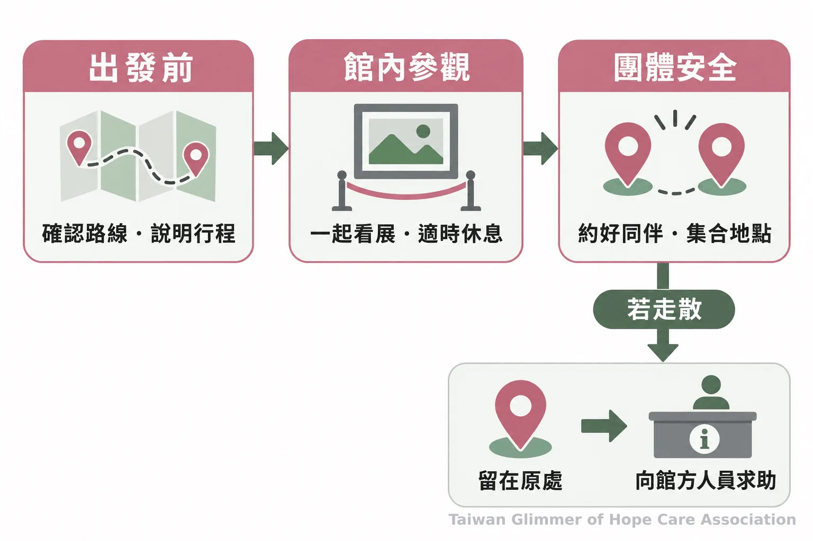
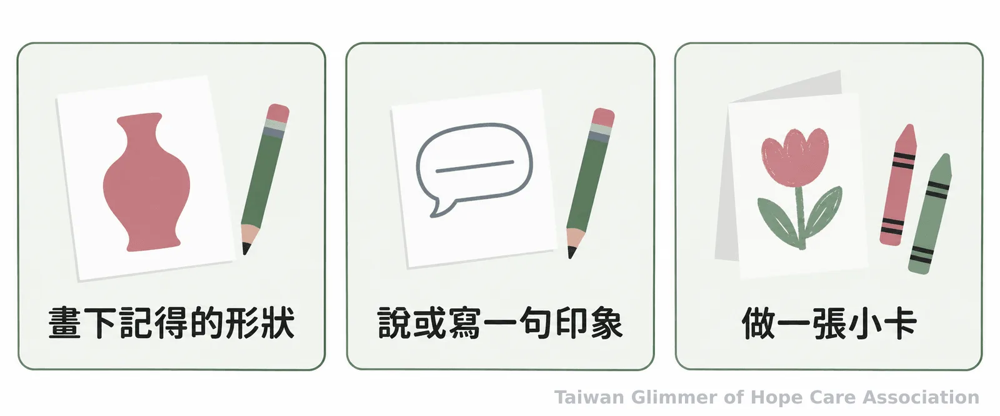

帶孩子看展可以先從哪裡開始？親子觀展的陪伴與準備
孩子走進美術館，不必先學會標準答案。台灣微光希望關懷協會分享公益觀展經驗，整理行前準備、展場對話、回家延伸與免費觀展資源，讓大人陪孩子自在看展。
台灣微光希望關懷協會
孩子走進美術館，可能先被一個顏色、一個形狀吸引，也可能只想跟著隊伍走。大人不必先準備一堂藝術史課；願意一起停下來看，聽聽孩子注意到什麼，親子看展就有了交流的起點。
台灣微光希望關懷協會於 10 月 3 日帶中壢據點孩子到國立中正紀念堂參觀《圓潤的魔法：波特羅特展》，感謝中正紀念堂管理處與聯合數位文創安排公益觀展。孩子跟著導覽老師觀察作品，圓潤的人物與動物也帶出一個簡單的想法：藝術沒有標準答案，不一樣也可以很有自己的樣子。
親子看展可以從觀察開始，不必先考作品知識
不必先教作者、年代或流派；先讓孩子說出看見的細節，再聽他怎麼理解作品。
看畫可以從顏色、形狀、表情或位置開始。陪伴者可以問：「你第一眼看到什麼？」「你覺得畫面裡哪裡最熱鬧？」問完先等一等，不急著補上成人的解釋。孩子若說得和大人不同，可以再問他從哪個細節想到這個答案；若他暫時不想說，也可以安靜地一起看。
國立臺灣美術館的臺灣兒童藝術基地以兒童及陪伴者共同探索、遊戲與創作為方向，提供孩子從不同角度接近藝術的空間。這些活動可作為藝文教育與日常陪伴的一部分，不能只憑一次觀展或一幅畫推論孩子的情緒、家庭狀況或是否遭遇傷害。

出發前說清楚行程，孩子比較知道接下來會發生什麼
先說明地點、交通、預計停留時間和集合方式，再依孩子的年齡、興趣與當天狀態調整行程。
出發前可一起看展覽介紹，讓孩子知道會看到什麼，也先說明搭車、入場、休息與回家的順序。挑展時查看場館的票價、開放時間、交通、無障礙資訊和參觀規定；行程留有彈性，不必要求一次走完整個館。孩子累了，可以休息、跳過某個展區，或提早離開。
團體觀展還要安排照顧細節。帶隊者先確認成人與孩子的分組、集合地點、點名時機、洗手間位置與緊急聯絡方法，並跟孩子約好走散時留在原處，向館方工作人員求助。若有兒少需要特別的支持，出發前由熟悉孩子的照顧者按原有照顧流程協調，不在公開行程或社群貼文揭露身分與家庭情形。

看展中留一點空白，讓孩子選擇看、說或休息
用開放式問題邀請孩子觀察，讓他決定要不要回答、停留或休息，不把參觀變成測驗。
「你注意到哪些顏色？」「如果替這幅畫取名字，你會怎麼取？」這類問題沒有唯一答案，孩子可以從眼前的作品出發。大人也能分享自己看到的細節，再把話題交回孩子。若孩子不願意回答，不必連續追問；若他想離開作品前面，就一起往下一處走。
看展後可以邀請孩子畫下記得的形狀、說一句最有印象的話，或做一張小卡。讓孩子挑一種方式，也可以選擇不分享。藝術活動提供觀察、表達與交流的機會，不能取代心理專業服務，也不宜被當成評估兒少經驗的方法。林秀霞曾說：「孩子是需要被鼓勵、被肯定的。」這份肯定可以從尊重孩子的觀看方式開始。

若陪伴者因孩子的談話或情況而擔心安全，不在展場追問、調查或公開討論，也不要從畫作判定孩子是否受虐。疑似兒少遭受不當對待，可撥衛生福利部113 保護專線諮詢或通報；如有立即危險，請撥 110。一般民眾與志工不自行查案或作保護決策，依既有流程交由專業人員及主管機關評估處理。分享兒少服務經驗時，也須遵守《兒童及少年福利與權益保障法》第 69 條所定的身分保護原則，不公開姓名及足以辨識身分的資訊。
免費或優惠觀展先看官方公告，再確認資格
先查看公立館舍的票價和免票資格，再向場館確認當期展覽、預約方式與所需證明。
國立臺灣美術館官網的時間與票價資訊公告免費參觀；館內另有兒童藝術基地，部分活動可能須事先預約。國立臺灣博物館的開放時間與票價頁面列出全票、半票及免票資格，例如未滿六歲兒童免票、六十五歲以上民眾平日免票，部分資格須出示有效證件。兩館的常設空間與特展規定可能不同，團體參訪也可能需要預約，出發前應再核對館方當期公告。
經濟弱勢家庭、兒童與青少年，以及涉及兒少保護服務的家庭，可先詢問場館服務窗口或既有服務團隊，確認票價、交通、陪同人力與隱私安排。詢問公益觀展或團體名額不代表一定有補助，須以館方正式回覆為準。衛生福利部也提供兒少保護求助資訊，方便家長、教師與志工查找 113 諮詢通報等管道。
- 看展前交代行程、分組與走散時的求助方式，並保留休息和離場的彈性。
- 看展中先聽孩子怎麼觀察，不考知識，也不從畫作推論孩子的生活經驗。
- 看展後提供畫畫、說話或做卡片等選擇；免費及優惠資格依館方當期公告確認。
「孩子是需要被鼓勵、被肯定的。」—台灣微光希望關懷協會理事長林秀霞（2026/7/11）
常見問題
Q1：孩子在展場坐不住怎麼辦？
可以縮短參觀時間，只挑一兩件作品看，孩子想休息或離開時就調整行程。
Q2：陪孩子看畫可以問什麼？
可以問「你第一眼看到什麼？」或「你想替這幅畫取什麼名字？」再聽孩子說完。
Q3：孩子對作品的說法和導覽不同，需要馬上糾正嗎？
不必急著糾正，可以先問孩子從哪個細節想到，再分享成人看到的部分。
Q4：經濟有限時怎麼找免費看展機會？
可先查公立館舍官方票價頁，並確認特展是否另收費、免票資格是否需要證件。
Q5：若擔心孩子安全，家長或志工可以怎麼做？
疑似兒少遭受不當對待可撥 113 諮詢或通報；有立即危險請撥 110，志工與一般民眾不自行查案。
參考文獻
- 國立臺灣美術館（無日期，2026 年查閱）。臺灣兒童藝術基地。https://www.ntmofa.gov.tw/child/cp.aspx?n=1646
- 國立臺灣美術館（2026 年查閱）。時間／票價。https://www.ntmofa.gov.tw/cp.aspx?Create=1&n=1420
- 國立臺灣博物館（2026 年查閱）。開放時間與票價。https://www.ntm.gov.tw/cp.aspx?Create=1&n=5444
- 衛生福利部（2026 年查閱）。兒少保護。https://www.mohw.gov.tw/cp-190-233-1.html
- 全國法規資料庫。兒童及少年福利與權益保障法第 69 條。https://law.moj.gov.tw/LawClass/LawSingle.aspx?pcode=D0050001&flno=69
- 衛生福利部保護服務司（2026 年查閱）。113 保護專線介紹。https://dep.mohw.gov.tw/DOPs/cp-1183-6499-105.html
本文同步刊於 appi.news。